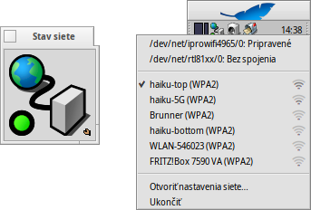

Stav siete
Stav siete
| Panel: | ||
| Umiestnenie: | /boot/system/apps/NetworkStatus | |
| Nastavenia: | žiadne |
Aplet Stav siete zobrazuje stav vašich pripojení k sieti. Po spustení Stavu siete sa vás aplet opýta, či ho chcete spúšťať v okne, alebo nainštalovať do Panelu. V režime okna sa dá ikone meniť veľkosť zmenou veľkosti okna a aplet sa dá pretiahnuť na plochu pomocou rúčky Replikanta . Nezávisle na tom, kde je nainštalovaný, kontroluje sa kontextovým menu vyvolaným kliknutím pravým tlačidlom myši.

Prvá sekcia obsahuje názvy všetkých sieťových zariadení a ich stav. Kliknutie na jednu z položiek vyvolá okno s IP adresou, adresou na broadcast a maskou siete.
Nižšie je uvedený zoznam všetkých bezdrôtových sietí, ktoré našiel bezdrôtový adaptér a indikátor sily ich signálu. Ďalšie informácie o tom ako nastaviť spojenie nájdete v kapitole Workshop: Bezdrôtové siete.
Nakoniec môžete a zmeniť tak vašu konfiguráciu siete alebo tento aplet.
Ikony stavu
| Pripravený | Spojenie bolo nadviazané. | ||
| Konfiguruje sa | Pripájanie prebieha. | ||
| Žiadna stavová konfigurácia | Niektoré nastavenie chýbajú (skontrolujte Konfiguráciu IP). | ||
| Žiadne pripojenie | Neexistuje žiadne fyzické pripojenie (sieťový kábel je pravdepodobne odpojený a bezdrôtové siete sú nedostupné). | ||
| - | Nie sú dostupné žiadne sieťové adaptéry (ak ste si istý, že aspoň jeden je pripojený, zrejme chýbajú ovládače). |